연삭기능사 (2002-01-27 기출문제)
1과목: 기계가공법 및 안전관리
1. 밀링 머신의 종류가 아닌 것은?
- 만능 밀링 머신
- 생산형 밀링 머신
- 플레이너형 밀링 머신
- 슬로터형 밀링 머신
(정답률: 알수없음)

2. 절삭공구 중 경도가 가장 높고 내마멸성도 크며 절삭 속도가 가장 크고 능률적이나 비철금속의 정밀절삭에만 쓰이는 것은?
- 스텔라이트
- 다이아몬드
- 시래믹
- 초경합금
(정답률: 알수없음)
3. 선반작업에서 사용하는 센터가 아닌 것은?
- 하프센터
- 게이지센터
- 파이프센터
- 베어링센터
(정답률: 알수없음)
4. 밀링에서, 브라운-샤프형의 21구멍 분할판을 사용하여 7등분 하고자 한다. 맞는 것은?
- 7회전하고 40구멍씩 돌린다.
- 5회전하고 15구멍씩 돌린다.
- 7회전하고 21구멍씩 돌린다.
- 15회전하고 5구멍씩 돌린다.
(정답률: 알수없음)
5. 밀링상향절삭(up cutting)의 설명 중 옳은 것은?
- 커터의 회전 방향과 공작물의 이송 방향이 반대이다.
- 커터의 회전 방향과 공작물의 이송 방향이 직각이다.
- 커터의 회전 방향과 공작물의 이송 방향이 같다.
- 커터의 회전 방향과 공작물의 이송 방향이 45° 이다.
(정답률: 알수없음)
6. 연삭 숫돌의 파손과 관계없는 것은?
- 연삭 숫돌과 공작물과의 충격
- 숫돌 측면의 과다 압력
- 불균일한 플랜지의 압력
- 연삭액의 과다 공급
(정답률: 알수없음)
7. 스크레이퍼(Scraper)로 연강 및 주철 재료를 가공 하려고 한다. 고운면 다듬질을 할 때, 다음 중 가장 적당한 날끝각은?
- 20∼40°
- 50∼70°
- 90∼120°
- 130∼150°
(정답률: 알수없음)
8. 밀링에서 작업 안전에 관한 사항 중 옳은 것은?
- 상하 이송핸들은 사용후 반드시 빼내 두어야 한다.
- 커터가 회전할 때에는 손을 대지 않는다.
- 절삭 가공 중 가공물의 거칠기를 손으로 검사한다.
- 절삭하는 도중 측정기구로 측정해도 좋다.
(정답률: 알수없음)
9. 밀링에서 칩의 제거는 무엇으로 제거하는 것이 가장 안전한가?
- 걸레
- 장갑
- 맨손
- 브러쉬
(정답률: 알수없음)
10. 공작기계의 기본운동을 절삭공구와 일감의 상대운동에 따라 분류할 때 칩을 만들기 위한, 회전운동 또는 직선운동에 해당되는 것은?
- 단속운동
- 절삭운동
- 이송운동
- 조정운동
(정답률: 알수없음)
11. 연삭기 작업을 할 때, 가장 알맞는 작업자의 위치는?
- 숫돌차의 원주면
- 숫돌차의 내측평면
- 숫돌차의 외측평면
- 어느 곳이든 상관없음
(정답률: 알수없음)
12. 창성법에 의한 기어가공용 커터가 아닌 것은?
- 래크커터
- 슬리팅커터
- 피니언커터
- 호브
(정답률: 알수없음)
13. 공구 수명을 판정하는 방법에 해당되지 않는 것은?
- 절삭 공구의 마멸
- 가공 치수의 변화량
- 완성 가공시 주분력의 공급 급증
- 배분력 및 이송 분력의 급증
(정답률: 알수없음)
14. 선반가공에서 면판을 사용할 때, 필요없는 부품은?
- 밸런싱 웨이트
- 맨드릴
- 앵글 플레이트
- 클램프
(정답률: 알수없음)
15. 연삭 숫돌 바퀴의 성능을 결정하는 요소는?
- 숫돌입자
- 가공물의 재질
- 절삭깊이
- 절삭량
(정답률: 알수없음)
16. 절삭유를 사용하는 목적이 아닌 것은 ?
- 공작물의 냉각
- 가공표면의 방청
- 공구와 칩의 친화
- 공구의 냉각
(정답률: 알수없음)
17. 선반, 드릴링 머신, 밀링 머신등의 공작기계를 조합하여 대량 생산에는 적합하지 않으나 소규모의 공장이나 보수 등을 목적으로 하는 공작기계는?
- 범용공작기계
- 단능공작기계
- 전용공작기계
- 만능공작기계
(정답률: 알수없음)
18. 센터리스 연삭의 단점에 해당되는 것은?
- 연삭 숫돌 바퀴의 너비가 작으므로 지름의 마멸이 크고, 수명이 짧다.
- 긴 홈이 있는 일감은 연삭할 수 없다.
- 일단 기계의 조정이 끝나도 가공이 어렵고, 작업자의 숙련이 필요하다.
- 긴 축 재료의 연삭을 하지 못한다.
(정답률: 알수없음)
19. 일감의 크기가 클 때, 가장 적당한 드릴링 머신은?
- 직립 드릴링 머신
- 탁상 드릴링 머신
- 레이디얼 드릴링 머신
- 다두 드릴링 머신
(정답률: 알수없음)
20. 호우닝(honing)은 무엇으로 일감을 가공하는가?
- 연삭숫돌
- 커터
- 드릴
- 사포
(정답률: 알수없음)
2과목: 기계재료 및 요소
21. 블록게이지(block gauge)의 제작에 가장 많이 사용되는 정밀입자 가공 방식은?
- 호닝
- 래핑
- 방전가공
- 슈퍼피니싱
(정답률: 알수없음)
22. 선반용 부속품 중 돌리개(lathe dog)의 종류가 아닌 것은?
- 곧은 돌리개
- 클램프 돌리개
- 곡형 돌리개
- 팽창식 돌리개
(정답률: 알수없음)
23. 슬로터의 크기를 표시하는 사항이 아닌 것은?
- 테이블의 이동거리
- 램의 최대 행정
- 원형 테이블의 지름
- 램의 무게
(정답률: 알수없음)
24. NC선반가공에서 공구기능 TO302을 가장 잘 설명한 것은?
- 공구보정없이 2번공구 선택
- 3번공구에 2번공구 보정취소 지령
- 3번공구에 2번공구 반복수행 지령
- 3번공구에 2번공구 보정수행 지령
(정답률: 알수없음)
25. 손 다듬질 작업이 아닌 것은?
- 줄 작업
- 금긋기 작업
- 호빙 작업
- 조립 작업
(정답률: 알수없음)
26. KS 규격에서 안전색깔과 그에 알맞는 안전표지 내용을 잘못 연결시킨 것은?
- 자주 : 방사능
- 빨강 : 정지
- 주황 : 위험
- 파랑 : 구호
(정답률: 알수없음)
27. 밀링 머신에서 일반적으로 경질 재료를 절삭할 때 틀린 것은?
- 저속
- 저이송
- 고이송
- 절삭깊이를 적게
(정답률: 알수없음)
28. 밀링 가공 중 하향 밀링(내려깍기)의 장점에 대한 설명으로 틀린 것은?
- 밀링 커터 날의 마멸이 적고 수명이 길다.
- 커터의 절삭방향과 이송 방향이 같으므로 가공면이 깨끗하다.
- 백래시 제거장치가 없어도 가공이 잘 된다.
- 커터 날이 밑으로 향하여 절삭하므로 일감의 고정이 간편하다.
(정답률: 알수없음)
29. 선반가공에서 절삭속도를 v(m/min), 회전수를 n(rpm)이라면 일감의 지름 d(mm)의 계산식은? (단, π = 3 으로 계산한다)
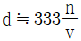
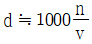
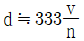
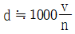
(정답률: 알수없음)
30. "측정기에 의하여 측정할 수 있는 범위"의 설명에 해당되는 용어는?
- 보정(補正)
- 목량(目量)
- 최소눈금
- 측정폭(測定幅)
(정답률: 알수없음)
31. 다음 공구 재료에서 고속도강의 주성분이 아닌 것은?
- 탄화 티타늄
- 텅스텐
- 크롬
- 바나듐
(정답률: 알수없음)
32. 평행 광선을 내는 장치와 반사경으로 구성되어 있으며, 일정한 거리에서의 반사경의 기울기를 읽어 평면도와 진직도 등을 조사하는 측정기는?
- 옵티컬 플랫
- 오토콜리메이터
- 삼점식 마이크로미터
- 공기식 마이크로미터
(정답률: 알수없음)
33. 보링머신 중에서 매우 빠른 절삭속도를 주어 내면의 정밀도가 높은 가공면을 얻는 것은?
- 래핑보링머신
- 수평보링머신
- 수직보링머신
- 정밀보링머신
(정답률: 알수없음)
34. 탄성숫돌 바퀴는 유기질의 결합제로 사용해 만든 것인데 결합제와 기호의 연결이 잘못 된 것은 ?
- 셀락 : E
- 고무 : R
- 레지노이드 : B
- 비닐 : C
(정답률: 알수없음)
35. 선반에 부착된 체이싱 다이얼(chasing dial)의 용도는?
- 드릴링 할 때 사용한다.
- 널링 할 때 사용한다.
- 나사 절삭을 할 때 사용한다.
- 모방 절삭을 할 때 사용한다.
(정답률: 알수없음)
36. 탄소강에 함유된 5대 원소는?
- 황(S), 망간(Mn), 탄소(C), 규소(Si), 인(P)
- 탄소(C), 규소(Si), 인(P), 망간(Mn), 니켈(Ni)
- 규소(Si), 탄소(C), 니켈(Ni), 크롬(Cr), 인(P)
- 인(P), 규소(Si), 황(S), 망간(Mn), 텅스텐(W)
(정답률: 알수없음)
37. 철의 비중으로 가장 적합한 것은?
- 5.5
- 7.8
- 9.5
- 11.5
(정답률: 알수없음)
38. 금속 중 용융점이 가장 높은 것은?
- 백금
- 철
- 텅스텐
- 수은
(정답률: 알수없음)
39. 금속탄화물의 분말형의 금속원소를 프레스로 성형한 다음 이것을 소결하여 만든 것으로, 경도가 크고 내열성, 내마멸성이 높은 특수강은?
- 합금공구강
- 고속도강
- 주조경질합금
- 초경합금
(정답률: 알수없음)
40. 주철의 결점인 여리고 질기지 못한 결점을 보충하여 어느 정도 질긴 성질이 부여된 주철은?
- 가단주철
- 칠드주철
- 회주철
- 백주철
(정답률: 알수없음)
3과목: 기계제도(절삭부분)
41. 소결 분말 합금 중에서 오일리스 베어링의 성분을 올바르게 표시한 것은?
- Cu - Sn – 흑연분말
- Cu - Ni - 흑연분말
- Cu - Zn - W 분말
- Cu - Pb - W 분말
(정답률: 알수없음)
42. 리벳 지름이 d(mm)인 1열 겹치기 리벳이음에서 1피치마다의 하중 W(㎏f)를 구하는 식으로 옳은 것은? (단, 리벳전단면은 1개소이며, τ(㎏f/mm2)는 허용 전단응력이다.)
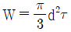
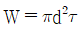
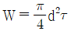
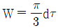
(정답률: 알수없음)
43. 테이퍼축에 가장 적합한 키이는?
- 접선키이
- 반달키이
- 스플라인키이
- 납작키이
(정답률: 알수없음)
44. 이중 웜이 잇수 30개의 웜기어와 물릴 때의 속도비는?
- 1 : 10
- 1 : 15
- 1 : 45
- 1 : 30
(정답률: 알수없음)
45. 그림과 같은 접속된 스프링에 하중 W=100kgf 가 작용할 때 처짐량 δ는 얼마인가? (단, K1=10 kgf/mm, K2=50 kgf/mm 이다.)
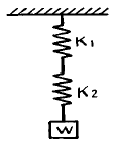
- 1.7 mm
- 12 mm
- 15 mm
- 18 mm
(정답률: 알수없음)
46. 다음 중 방향이 변화하지 않고 일정한 방향에 반복적으로 연속하여 작용하는 하중은?
- 집중하중
- 분포하중
- 교번하중
- 반복하중
(정답률: 알수없음)
47. 전단하중을 전단면적으로 나눈 것은?
- 전단응력
- 인장응력
- 압축응력
- 휨응력
(정답률: 알수없음)
48. 체인(chain)의 특징 중 틀린 것은?
- 접촉각은 90° 이상이면 좋다.
- 유지 및 수리가 용이하다.
- 내열, 내유, 내습성이 강하다.
- 미끄럼이 많지만 일정한 속도비가 얻어진다.
(정답률: 알수없음)
49. 담금질 냉각제 중 냉각속도가 가장 큰 것은?
- 물
- 소금물
- 기름
- 공기
(정답률: 알수없음)
50. 황동을 불순한 물 또는 부식성 물질이 용해된 곳에서 사용할 때 발생하는 결함은?
- 자연균열
- 방치갈림
- 탈아연 부식
- 경년변화
(정답률: 알수없음)
51. 그림에서 대각선으로 표시한 가는실선이 나타내는 뜻은?
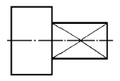
- 평면
- 열처리할 면
- 가공 제외 면
- 끼워맞춤하는 부분
(정답률: 알수없음)
52. 다음 재료 기호 중 스테인레스 주강품을 표시하는 것은?
- SMC
- HRSC
- SSC
- STC
(정답률: 알수없음)
53. 다음 입체도의 화살표 방향 정면도를 올바르게 투상한 것은?
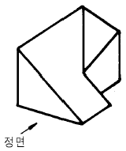
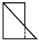
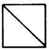
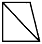
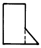
(정답률: 알수없음)
54. 보기 입체에서 화살표 방향이 정면일 경우 정투상도로 올바르게 투상된 도면은?
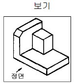
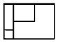
: 평면도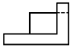
: 정면도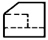
: 좌측면도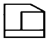
: 우측면도
(정답률: 알수없음)
55. 단면도의 표시방법에서 그림과 같은 단면도의 명칭은?
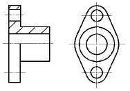
- 전단면도
- 한쪽 단면도
- 부분 단면도
- 회전 도시 단면도
(정답률: 알수없음)
56. 보기 도면에서 ⓐ부분에 표시되어야 할 기하공차의 기호로 가장 적합한 것은?
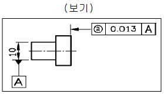
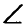
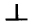
(정답률: 알수없음)
57. 보기와 같은 치수 기입법의 명칭으로 가장 적합한 것은?
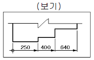
- 직열치수 기입법
- 누진치수 기입법
- 좌표치수 기입법
- 병열치수 기입법
(정답률: 알수없음)
58. 도면에 그려진 길이와 실제 대상물의 길이를 같게 그린 척도를 무엇이라 하는가?
- 축척
- 배척
- 현척
- 비척
(정답률: 알수없음)
59. 다음 끼워 맞춤 치수 중 억지끼워 맞춤인 것은?
- 구멍
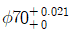
, 축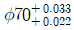
- 구멍
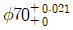
, 축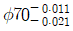
- 구멍
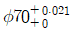
, 축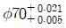
- 구멍
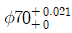
, 축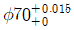
(정답률: 알수없음)
60. 기어(Gear) 제도시 피치원을 표시하는 선은?
- 파선
- 1점 쇄선
- 2점 쇄선
- 굵은 실선
(정답률: 알수없음)